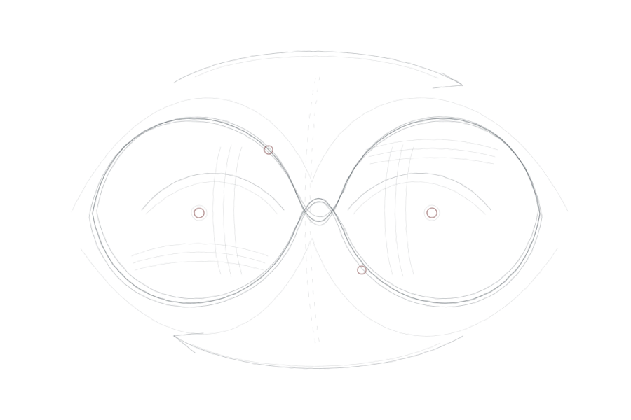

The simplicity of the Hodge bundle

Table of Contents
Tags
| Tag | Type | Number |
|---|---|---|
| 1DCD | Theorem | 1.1 |
| 887A | Lemma | 2.1 |
| F346 | Proof | |
| 63CC | Commentary | 2.2 |
| D400 | Definition | 2.3 |
| 8204 | Lemma | 2.4 |
| B35E | Proof | |
| 4C27 | Lemma | 2.5 |
| D06D | Proof | |
| AAAF | Commentary | 2.6 |
| E671 | Lemma | 2.7 |
| 7AF4 | Proof | |
| 8E73 | Lemma | 2.8 |
| 2ABC | Proof | |
| CC21 | Proof |